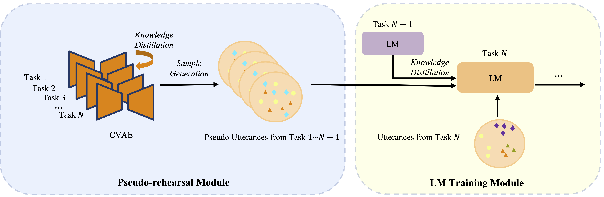
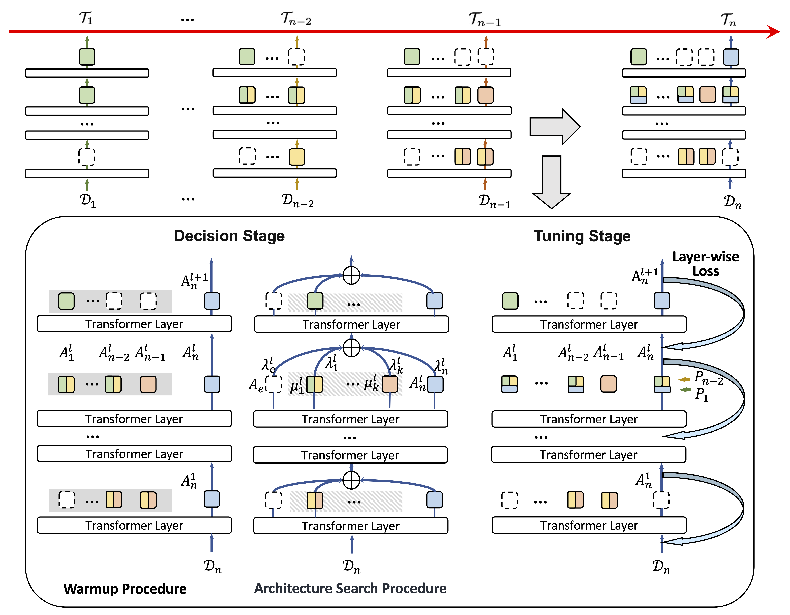
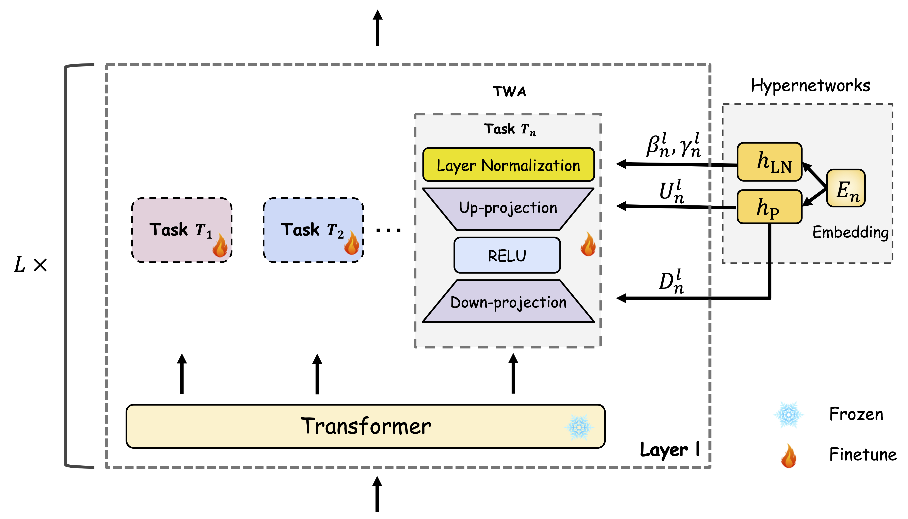
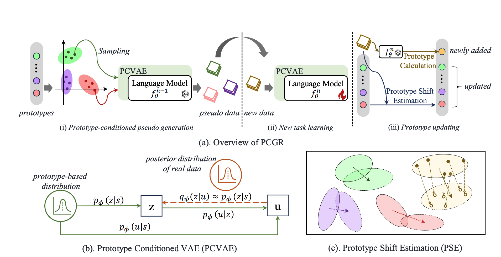
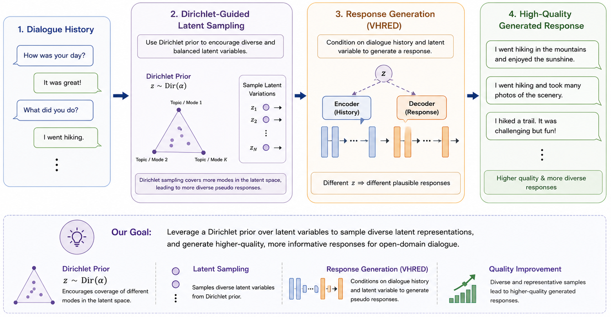
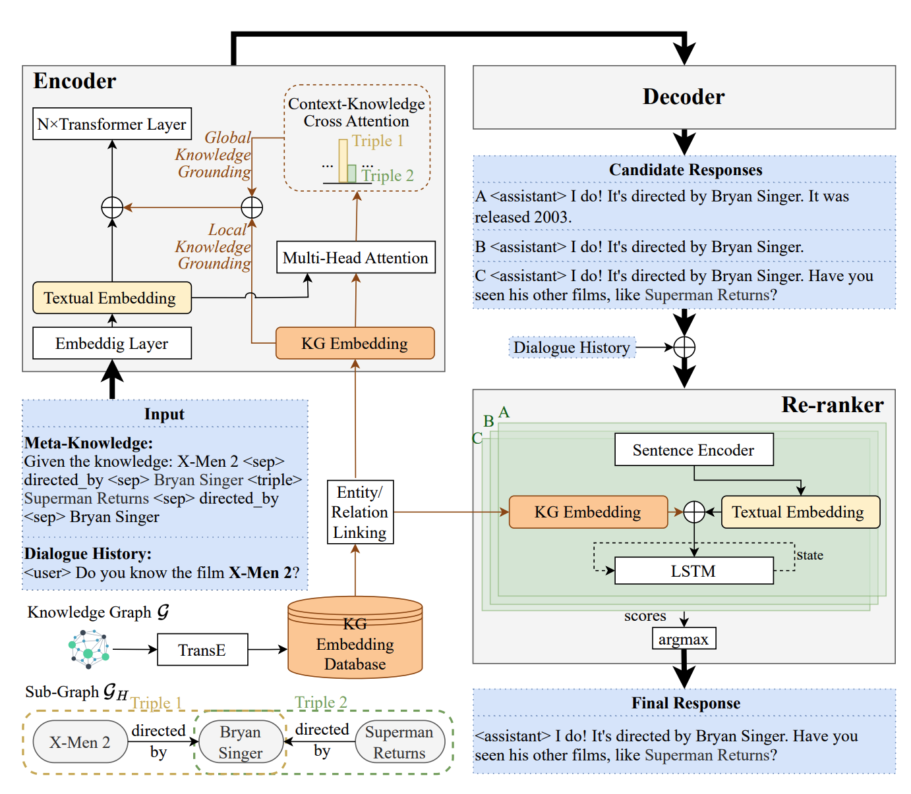
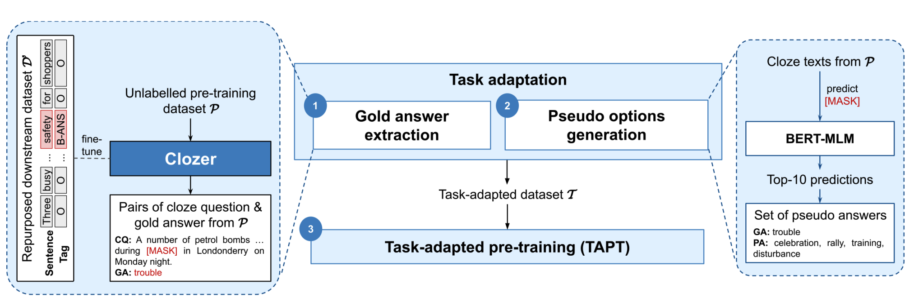
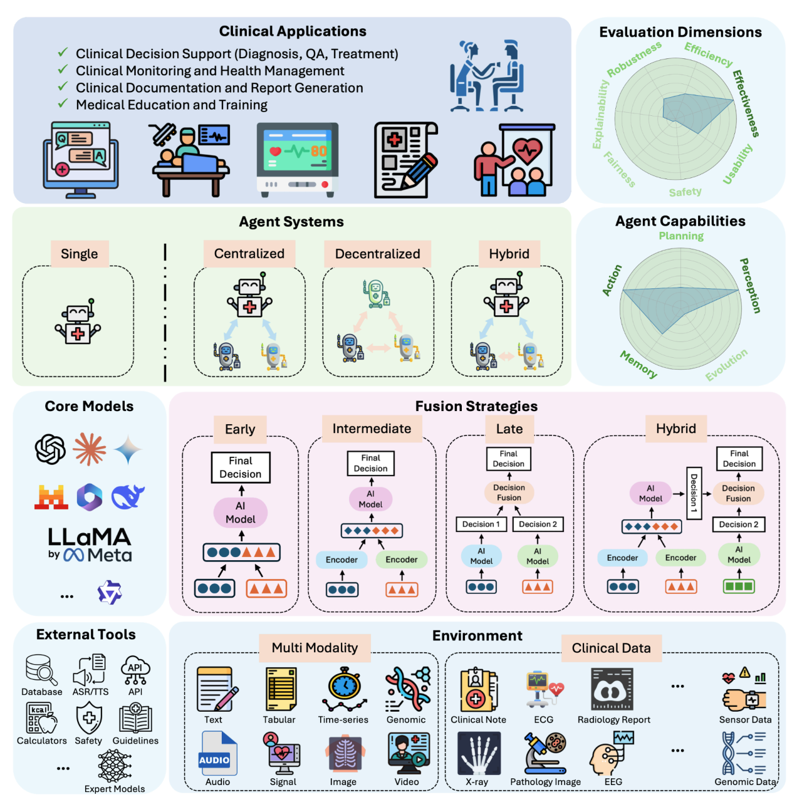

Min Zeng 曾敏
I am Min Zeng, a Postdoctoral Research Associate at University of Minnesota , working with Rui Zhang . I received my Ph.D. in Electronic and Computer Engineering from HKUST , advised by Yike Guo , and my M.Phil. in Computer Science from Shanghai Jiao Tong University , advised by Yuan Luo .
I welcome collaborations. Feel free to reach out via email.
Research
My research focuses on enabling large language models (LLMs) to continuously learn and adapt to evolving tasks, data, and environments while retaining previously acquired knowledge, remaining efficient, reliable, and trustworthy.
Current Research Interests:
- Continual / Lifelong Learning
- Longitudinal Reasoning
- AI for Healthcare
Selected Publications [Full List]
* Equal contribution.







Services
Conference Area Chair: ACL Rolling Review (ARR), January 2026
Conference Reviewers: ACL, EMNLP, NAACL, UAI, EACL
Journal Reviewers: IEEE TASLP, NPJ Digital Medicine, NPJ Health Systems
Academic Service: AMIA 2025 NLP Year-in-Review Volunteer